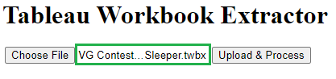
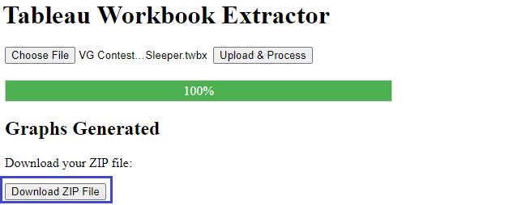

Example¶
This section presents a practical example of using the tool to extract data from a Tableau workbook.
For this example the deployed Flask application will be used to extract fields and their dependencies from the Super Sample Superstore Dashboard (original source: Real-World Examples of Business Intelligence (BI) Dashboards).
Note
You do not need to have Tableau installed to run the example. However, having Tableau installed may help you verify the results more effectively.
Instructions¶
Step 1: Download the Example Tableau Workbook¶
Download a local copy of the Super Sample Superstore Dashboard by navigating to the page and clicking on the Download button in the top right corner. Select the Tableau Workbook option to download the workbook:
{kind=link}
The file will be saved as VG Contest_Super Sample Superstore_Ryan Sleeper.twbx.
Step 2: Open the Application¶
For this example, we will use the deployed Flask application, which can be accessed in a browser at the following URL:
https://tableau-workbook-extractor.onrender.com
Note
Please be patient: since the app is hosted on the free tier of Render, it will take some time to load the application as the Docker container needs to be started up first.
Step 3: Select the Tableau Workbook¶
Click on the Choose File button to select the downloaded Tableau workbook you downloaded in the previous steps.
After the file selection it’s truncated name will be shown in the application (see green rectangle in screenshot below):
{kind=link}
Step 3: Process the Workbook¶
Click on the Upload & Process button to upload and process the selected workbook. The progress bar below will display the current percentage of processing completion.
{kind=link}
Note
Depending on the complexity of the workbook this can take a while
Step 4: Download the Output Files¶
Once the file has been processed, a download button will appear,
allowing you to download the zipped output files in a file
tableau-workbook-extractor-output.zip.
Click the Download ZIP file button to save the zip file (see green rectangle in screenshot below):
{kind=link}
Next, extract the files from the zip archive to a convenient location on your local machine.
Step 5: Check the Outputs: Dependency Graphs¶
The Graphs subfolder of the extracted files has 4 folders corresponding to the
2 used data sources SampleSuperstore and TOCAnnotations as well as separate
subfolders Sheets and Parameters resp. for sheet and
parameter dependencies.
We will check one of the fields from the SampleSuperstore data source.
The PP Sales calculated field produced 2 output files PPSales.png and
PPSales.svg. These 2 files are the same except that the SVG image
also shows tooltips with the field calculations:
{kind=link}
The calculation for PP Sales is equal to
SUM(IF [Date Filter PP] = True THEN [Sales] END)
(tooltip of the light blue ellipse). The calculated field therefore has 2
direct dependencies Date Filter PP (another calculated field) and Sales
(a data source field).
While there are only 2 direct dependencies we see from the image that the
PP Sales calculated field (light blue ellipse) in total has 9 backward dependencies:
4 calculated fields (orange ellipses)
2 data source fields (green rectangles)
3 parameters (purple parallellograms)
They can also be split in terms of minimum dependency level:
2 ‘level -1’ (or direct) dependencies (max. 1 arrow needed to arrive at
PP Sales):Date Filter PPandSales4 ‘level -2’ dependencies (max. 2 forward arrows needed to arrive at
PP Sales):Order Date 2017,Maximum Date,Date ComparisonandMinimum Date3 ‘level -3’ dependencies (max. 3 forward arrows needed to arrive at
PP Sales):Order Date,Days in RangeandDate Comparison
A similar exercise can be done to analyze the forward dependencies (5 in total with dependency levels 1 to 4, all of the calculated fields).
Note
For more information on the output files, please check the documentation on Output Files.
Step 6: Check the Outputs II: Fields Spreadsheet¶
In this section the information from the output Excel file is analyzed in detail for the example workbook.
Note
For more information on the output files, please check the documentation on Output Files.
Dependendy info¶
The output Excel file Fields\VG Contest_Super Sample Superstore_Ryan Sleeper.xlsx
includes the same information as the previously analyzed network graph in the
sheet dependencies, but it is presented in a tabular format instead of
a visual representation of the nodes and edges.
For our example field PP Sales we can filter the edges as follows in the
sheet dependencies:
source_field_label= [Sample - Superstore].[PP Sales]dependency_categorynot equal to ‘Sheet’
In the image below you can see a selection of the fields where the edges are
represented by connections between a node in the dependency_from column
to a node in the dependency_to column:
{kind=link}
The edges coming from backward dependencies are colored in green while the edgets coming from forward dependencies are colored in red.
The edge information can be used to extract the unique forward and backward
dependencies for PP Sales in a pivot table.
dependenciessheet: make 3 extra columns (examples for first row only):dependency = IF(dependency_level<0, dependency_from, dependency_to)(for backward dependencies the “from” dependency matters, for forward dependencies the “to” dependency)dependency_type = IF(dependency_category="Sheet", "sheet", IF(dependency_level<0, "backward", "forward"))(negative dependency level = backward, positive = forward, 0 = sheet)dependency_level_abs = ABS(dependency_level)(ignore sign; replaced by dependency_type )
Create the following pivot table from the
dependenciessheet:Rows:
dependency type&dependencyValues: Minimum of
dependency_level_absFilters:
source_field_label= [Sample - Superstore].[PP Sales];dependency type<> “Sheet”
The screenshot below shows the result. The backward dependencies are colored according to their dependency level, and show that the information corresponds to the graph we analyzed in the previous section (2 level 1, 4 level 2 and 3 level 3 backward dependencies). For completeness the forward dependencies are also shown.
{kind=link}
Note
Naturally this process could be simplified by including additional columns in the output Excel file in future releases.
Field metadata¶
Apart from the dependency information the Excel file also has a sheet fields
that contains metadata for all fields, with information like field type, role,
calculation, etc.
The metadata for our example field PP Sales can be checked by filtering the
Fields sheet on source_field_label = [Sample - Superstore].[PP Sales].
The screenshot below shows the transposed version of the filtered data.
{kind=link}
From our earlier analysis we can automatically confirm most of the information, like:
It is a calculated field that is a (quantitative) measure and used in multiple sheets and/or other calculations
Dependency levels vary from -4 (backward) to 3 (forward)
The field has 2 dependencies on data source fields (
SalesandOrder Date)
Conclusion¶
This use case demonstrates how easily you can extract data from Tableau workbooks using the tool. Make sure to follow the steps and refer to the screenshots for guidance.